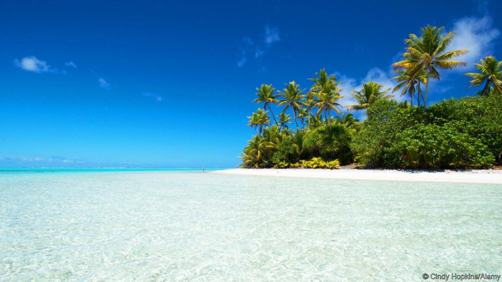

An Island paradise that will adopt you

On this fascinating South Pacific island, all 62 residents are related, everyone shares the same surname and can trace their lineage back to one British man.
We saw the foam before we heard the breaking waves. My husband Rob and I squinted through the morning sun, trying to pick out the low-lying shoreline of the Palmerston Atoll on the horizon. After sailing for five days through rolling blue swells, the line of white signifying land was a welcome sight. Rob did a little dance in anticipation of spearing a fish for dinner. I was more excited about delving into this bizarre community I’d heard so much about.
As the tiny settlement came closer, we hailed the island over the VHF radio to announce our arrival. Within minutes, a scuffed aluminium boat was speeding toward us from inside the protected lagoon. The driver cut the outboard and bobbed alongside our stern.
“I'm Simon Marsters,” said the short, shirtless driver. “Has anyone greeted you yet?” We shook our heads. Simon grunted in satisfaction. “Good. I'll be your host. You can use my mooring with that yellow buoy, then I'll take you in for lunch.”
Our cruising guidebook had warned us about the “extreme hospitality” of Palmerston. No foreigner is allowed to set foot on shore without first being adopted into a local family. Visitors are encouraged to reciprocate the islanders' hospitality with donations of clothes, pens and other staples. Apparently, we'd now been adopted.
Located halfway between the better-known South Pacific sailing ports of Bora Bora and Niue, the Palmerston Atoll is so remote that until 1969 its position on maps was based on Captain Cook's charts from 1774. In fact, Palmerston is the only Cook Island that the prolific Pacific explorer actually set foot on, though the clump of 15 islands are named for him. Cook dubbed the then-uninhabited atoll Palmerston, after Britain's first Lord of the Admiralty.
Today Palmerston is a postcard-perfect paradise with no bank, store or road – islanders have to travel 800km south to the largest island, Rarotonga, to find these modern day conveniences. But what makes this tiny Cook Islands outlier more than just a pretty place are the quirks that footnote its culture: the island has the highest number of freezers per capita in the Southern Hemisphere; locals play volleyball every afternoon except Sunday; and all 62 of its residents are related – everyone on Palmerston shares the same surname and trace their lineage back to one man: William Marsters.

A British adventurer, William Marsters landed on uninhabited Palmerston in 1883 to set up a copra (dried coconut) trade with other Polynesian islands. He brought two Polynesian wives from neighbouring Penrhyn, and later recruited a third wife from the same island, producing an impressive colony of 23 children and 134 grandchildren. Before he died in 1899, Marsters divided the 2sqkm atoll into thirds to give each of the three wives and their descendants a share. The residents still govern themselves based on these hypothetical lines in the sand, and cluster their families on their respective chunk of the atoll. Marriage within a family branch is prohibited.
Rob and I packed a bag to go ashore with Simon, bringing fishing tackle as a gift, along with notebooks for the kids at the island’s only school.
Our host gunned the powerful outboard engine directly toward the waves breaking on the atoll's fringing reef. I held on tight, praying that he wouldn't miss the tiny, 3m wide pass through the reef. As the boat surfed down a wave through the tight gap, coral jutting out on both sides, I was relieved we didn't have to navigate through in our own small rubber dinghy.
Once safely inside the lagoon, we skimmed across flat cerulean water toward the bright white sand framing the island. Wind, rain and waves have slowly eroded the atoll, leaving most of it just barely submerged. The highest point on the entire island is only 6m high – a man-made mound called “Refuge Hill” where the residents cluster during summer cyclones.

A beached ship greeted us as we stepped ashore, battered, broken and belly up.
“Recent wreck?” Rob asked.
“Maybe four, five years ago,” replied Simon. His speech was slow to make room for a slight stutter. “Good wood for building.”
He pointed out William Marsters’ original home through the coconut trees. With a rusting tin roof and half-metre-wide planks harvested from 19th-century boat timbers, the long building looked more like a barn than a home. But it served its purpose as a sturdy shelter: the structure has successfully withstood dozens of cyclones over the past 150 years.
Several people greeted us as we walked on to Simon’s house. A teenage girl came over to ask where we were heading next, and was disappointed to hear us say Niue. She was looking for a ride south to visit an aunt in Rarotonga.
Boats are still the only mode of transportation to and from this atoll. A cargo ship from Rangiroa, the largest city in the Cook Islands, stops by just three times a year to drop off supplies, loading back up with crates full of flash-frozen parrotfish, Palmerston’s only export. Every family has several large freezers filled with this rainbow-coloured, large-scaled reef-grazer.
Palmerston residents sometimes hop aboard the cargo ship, squeezing in alongside the chest freezers, to visit neighbouring islands or to catch a flight to New Zealand from Rarotonga or Niue. The only other option for leaving the island is to hitchhike on a passing sailboat. But the window for thumbing a ride is narrow: yachts only travel through this part of the South Pacific from May through September to avoid cyclones and maximize the trade winds.
At Simon's small house we sat down to a lunch of flaky, succulent parrotfish – baked with head, tail and fins still attached – with his niece, grandnephew, brother and 89-year-old mother. I asked if they got sick of eating fish. Simon's mother laughed, nodding. She said she preferred to eat “real meat”, referring to the white-tailed tropicbirds that nest throughout the atoll.
For dessert, Simon split open two coconuts for Rob and me.
“Do you play volleyball?” Simon asked. “We play at 4 pm.”
A lifelong volleyball player, Rob's face lit up. “The only thing we like better than volleyball is church,” Simon's niece said. The Palmerston natives attend services daily and several times on Sundays, always dressed in their finest.
We agreed to meet the family at 4 pm, and set off to explore on our own. It took us 20 minutes to circle the island, another 10 to walk across the interior’s main path. We passed the construction site for a new solar power station, which will replace the island's unreliable diesel generators with round-the-clock electricity, and stopped at the cemetery, full of Marsters headstones.
As we headed toward the volleyball court, A hefty islander wearing bright board shorts waved us over to warm up with the locals. I quickly realized that their volleyball skills far surpassed mine. Across the net from me, Rob held his own. As he adjusted his top after a particularly athletic block, returning a high-five, I noticed that Rob's waist was smaller than most of the players' thighs.
As the sun dropped to the horizon, families headed home for dinner.
“Tomorrow, we fish. You will join?” Simon asked as he shuttled us back to our sailboat.
“Definitely,” Rob replied.
We stayed on Palmerston another three days. On the last evening, after volleyball and before dark, Simon sat in our cockpit sipping a cocktail and giving Rob fishing tips. Spear in hand, Rob hopped over the side, determined to finally snag one of Palmerston's famous parrotfish. A few minutes later, he surfaced with a blue-green beauty, as long as his arm and fat as a football. Simon nodded in satisfaction, toasting Rob's success.
We feasted that night with our adopted Marsters family, thanking them for their hospitality by sharing fish and more gifts. But without a doubt, Rob and I gained more from that quirky atoll than we could ever give back.
Subscribe to our newsletter for free